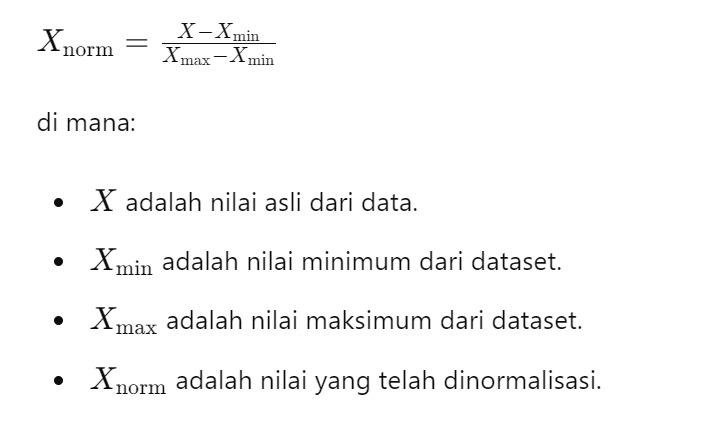

Kami mengambil data Diagnosa Penyakit Jantung atau Heart Diasese dari website https://archive.ics.uci.edu/ yang selanjutnya akan kami uji sebagai proyek dari mata matakuliah kami yaitu matakuliah Penambangan Data. Untuk lebih jelasnya dapat disimak langkah-langkah kami dalam mengerjakan proyek ini
Pada pekerjaan kali ini, kami akan melakukan klasifikasi untuk prediksi penyakit jantung. Tujuan dari pekerjaan ini adalah untuk membantu dalam memprediksi adanya penyakit jantung atau tidak pada individu berdasarkan berbagai fitur yang tersedia. Dataset yang kami gunakan adalah dataset "Heart Disease" yang kami ambil dari UCI Machine Learning Repository. Dataset ini berasal dari Cleveland Clinic Foundation.
Langkah pertama yang dilakukan adalah mengumpulkan data. Data tersebut berada di aiven.com, sehingga data perlu ditarik dari sumber tersebut. Dataset ini terdiri dari 303 baris dan 13 fitur, yaitu age, sex, cp, trestbp, chol, fbs, restecg, thalach, exang, oldpeak, slope, ca, dan thal.
Terdapat 2 type data dalam dataset ini, yakni numeric dan categorical.
| no | nama | type | deskripsi | value |
| 1 | age | int (numerik) | Variabel Usia pasien dalam tahun. | |
| 2 | sex | categorical | Variabel jenis kelamin individu dalam dataset | 1 untuk laki-laki, 0 untuk perempuan |
| 3 | cp (Chest Pain Type) | categorical | Variabel Tipe nyeri dada yang dirasakan pasien. |
-- Value 0: typical angina -- Value 1: atypical angina -- Value 2: non-anginal pain -- Value 3: asymptomatic |
| 4 | trestbps (Resting Blood Pressure) | int | Variabel Tekanan darah pasien saat istirahat, diukur dalam mm Hg (milimeter merkuri). | |
| 5 | chol (Serum Cholesterol) | int | Variabel kadar kolesterol serum. Jumlah kolesterol dalam darah pasien, diukur dalam mg/dL (miligram per desiliter). | |
| 6 | fbs (Fasting Blood Sugar) | categorical | Variabel kadar gula darah puasa > 120mg/dl. Kadar gula darah pasien setelah berpuasa selama 8 jam. | 1 = true; 0 = false |
| 7 | restecg (Resting Electrodiographic Result) | categorical | Variabel hasil elektrokardiografi(rekaman aktivitas listrik jantung) ketika istirahat |
-- Value 0: normal -- Value 1: having ST-T wave abnormality -- Value 2: showing probable or definite left ventricular hypertrophy by Estes' criteria |
| 8 | thalach (Maximum Heart Rate Achieved) | int | Variabel denyut jantung maksimal yang dicapai pasien selama tes latihan. | |
| 9 | exang (Exercise Induced Angina) | categorical | Variabel angina yang diinduksi latihan (nyeri dada selama latihan) | 1 = yes; 0 = no |
| 10 | oldpeak (ST Depression Induced by Exercise Relative to Rest) | int | Variabel depresi ST latihan relatif terhadap istirahat (Perubahan level ST pada elektrokardiogram (EKG) yang menunjukkan seberapa parah jantung terpengaruh oleh latihan fisik.) | |
| 11 | slope (Slope of the Peak Exercise ST Segment) | categorical | Variabel kemiringan segmen ST selama latihan (Kemiringan segmen ST pada EKG) |
-- Value 1: upsloping -- Value 2: flat -- Value 3: downsloping |
| 12 | ca (Number of Major Vessels Colored by Fluoroscopy) | int | Variabel jumlah pembuluh darah utama berwarna yang dapat dilihat dengan fluoroskopi (teknik pencitraan medis). | |
| 13 | thal (Thalassemia) | categorical | Variabel Kondisi darah terkait thalasemia. | 0 = normal; 1 = fixed defect; 2 = reversable defect |
| Target Variable | target | categorical | Memprediksi apakah seseorang menderita penyakit jantung atau tidak | 0 = tidak ada; 1 = ada |
CKEditor 5 can be configured to
output Markdown instead of HTML. Markdown is a lightweight markup
language that you can use to add formatting to plain text documents. Use
the Source button to check and edit the Markdown source
code of this content. The editor-produced Markdown output supports most
essential features, like links,
different kinds of emphasis,
inline code formatting, or code blocks:
p {
text-align: center;
color: red;
}Thanks to the autoformatting
feature, you can use Markdown syntax when writing. Try it out - use
these (or any other) Markdown shortcuts in the editor to format the
content on the fly 🚀! | Inline formatting | Shortcut | | --- | --- | |
Bold | Type ** or __ around
your text. | | Italic | Type * or _
around your text. | | Code | Type ˋ around
your text. | | ~Strikethrough~ | Type ~~ around your text.
| Shh! 🤫 Markdown has very basic support for tables. Some advanced
table-related features like table or cell styling were disabled in this
demo.
You can also use Markdown to create various text blocks, such as:
﹥ followed by a
space.# followed by a
space.## followed by a
space.### followed by a
space.1. or
1) followed by a space.* or -
followed by a space.[ ] or [x]
followed by a space to insert an unchecked or checked list item.ˋˋˋ.---df_1 = _deepnote_execute_sql('SELECT * FROM `defaultdb`.`dataset`', 'SQL_BC3F0200_03FA_4DF4_B292_41D7A332FCDA', audit_sql_comment='', sql_cache_mode='cache_disabled')
df_1{"size_in_bytes":36488,"status":"success_no_cache"}| ID | age | sex | cp | trestbps | chol | fbs | restecg | thalach | exang | oldpeak | slope | ca | thal | target | |
|---|---|---|---|---|---|---|---|---|---|---|---|---|---|---|---|
| 0 | 1 | 63 | 1 | 3 | 145 | 233 | 1 | 0 | 150 | 0 | 2.3 | 0 | 0 | 1 | 1 |
| 1 | 2 | 37 | 1 | 2 | 130 | 250 | 0 | 1 | 187 | 0 | 3.5 | 0 | 0 | 2 | 1 |
| 2 | 3 | 41 | 0 | 1 | 130 | 204 | 0 | 0 | 172 | 0 | 1.4 | 2 | 0 | 2 | 1 |
| 3 | 4 | 56 | 1 | 1 | 120 | 236 | 0 | 1 | 178 | 0 | 0.8 | 2 | 0 | 2 | 1 |
| 4 | 5 | 57 | 0 | 0 | 120 | 354 | 0 | 1 | 163 | 1 | 0.6 | 2 | 0 | 2 | 1 |
| ... | ... | ... | ... | ... | ... | ... | ... | ... | ... | ... | ... | ... | ... | ... | ... |
| 298 | 299 | 57 | 0 | 0 | 140 | 241 | 0 | 1 | 123 | 1 | 0.2 | 1 | 0 | 3 | 0 |
| 299 | 300 | 45 | 1 | 3 | 110 | 264 | 0 | 1 | 132 | 0 | 1.2 | 1 | 0 | 3 | 0 |
| 300 | 301 | 68 | 1 | 0 | 144 | 193 | 1 | 1 | 141 | 0 | 3.4 | 1 | 2 | 3 | 0 |
| 301 | 302 | 57 | 1 | 0 | 130 | 131 | 0 | 1 | 115 | 1 | 1.2 | 1 | 1 | 3 | 0 |
| 302 | 303 | 57 | 0 | 1 | 130 | 236 | 0 | 0 | 174 | 0 | 0.0 | 1 | 1 | 2 | 0 |
303 rows × 15 columns
import numpy as np
import pandas as pd
df = pd.read_csv('dataset.csv')
df.isnull().sum()ID 0
age 0
sex 0
cp 0
trestbps 0
chol 0
fbs 0
restecg 0
thalach 0
exang 0
oldpeak 0
slope 0
ca 0
thal 0
target 0
dtype: int64KESIMPULAN: dapat dilihat bahwa tidak terdapat missing values dalam dataset
import numpy as np # Import library numpy
import pandas as pd # Import library pandas
df = pd.read_csv('Numerical.csv') # Membaca file dataset.csv
df.describe() #hanya berlaku untuk type data numerik | age | trestbps | chol | thalach | oldpeak | ca | |
|---|---|---|---|---|---|---|
| count | 272.000000 | 272.000000 | 272.000000 | 272.000000 | 272.000000 | 272.000000 |
| mean | 53.977941 | 130.750000 | 244.488971 | 151.091912 | 1.021324 | 0.727941 |
| std | 9.005916 | 16.414713 | 41.800262 | 22.017161 | 1.152050 | 1.030651 |
| min | 29.000000 | 94.000000 | 157.000000 | 88.000000 | 0.000000 | 0.000000 |
| 25% | 47.000000 | 120.000000 | 212.000000 | 139.000000 | 0.000000 | 0.000000 |
| 50% | 55.000000 | 130.000000 | 240.500000 | 154.500000 | 0.650000 | 0.000000 |
| 75% | 60.000000 | 140.000000 | 273.000000 | 168.000000 | 1.600000 | 1.000000 |
| max | 77.000000 | 200.000000 | 353.000000 | 202.000000 | 6.200000 | 4.000000 |

KETERANGAN :
df.describe() hanya digunakan untuk tipe data numerik Count: Jumlah data dalam setiap kolom. Mean: Rata-rata nilai dalam setiap kolom. Std (Standard Deviation): Standar Deviasi dari nilai dalam setiap kolom. Min: Nilai minimum dalam setiap kolom. 25%, 50%, 75% (quartiles): Nilai-nilai kuartil yang membagi data menjadi empat bagian sama besar. Kuartil ke-50 adalah median. Max: Nilai maksimum dalam setiap kolom.
# Langkah 1: Impor pustaka pandas
import pandas as pd
# Langkah 2: Baca file CSV menggunakan pd.read_csv
# Ganti 'nama_file.csv' dengan nama file CSV yang sesuai dengan data Anda
data = pd.read_csv('categorical.csv')
# Langkah 3: Hitung modus untuk setiap kolom kategori menggunakan mode()
modus = data.mode()
# Langkah 4: Tampilkan hasil modus
print("Modus untuk setiap kolom kategori:")
print(modus)Modus untuk setiap kolom kategori:
sex cp fbs restecg exang slope thal target
0 1 0 0 1 0 2 2 1


KESIMPULAN: dapat dilihat bahwa karakteristik yang paling sering muncul adalah berjenis kelamin(sex) pria(1), jenis nyeri dada(cp) "typical angina"(0), kadar gula darah puasa(fbs) normal(0), hasil elektrokardiogram(restecg) normal(1), (slope) jarang mengalami angina saat latihan fisik, tipe slope "flat"(2), dan jenis thalassemia(thal) "normal"(2).
Outlier adalah data yang berbeda secara signifikan dari data lain dalam sebuah set data. Mereka bisa menjadi nilai yang sangat kecil atau sangat besar dibandingkan dengan nilai rata-rata atau mayoritas data lainnya.
LOF (Local Outlier Factor) adalah metode statistik yang digunakan untuk mendeteksi outlier dalam sebuah set data. Metode ini menghitung seberapa jauh suatu titik data berada dari tetangga-tetangganya dalam konteks data tersebut. LOF memberikan nilai yang menggambarkan seberapa "aneh" atau tidak biasa suatu titik data dibandingkan dengan tetangganya.
Berikut merupakan implementasi dari perhitungan LOF dengan menggunakan library Scikit Learn.
# Mengimpor pustaka pandas dengan alias 'pd'.
import pandas as pd
# Mengimpor kelas LocalOutlierFactor dari modul neighbors di pustaka Scikit-learn (sklearn).
from sklearn.neighbors import LocalOutlierFactor
# Membaca dataset dari file CSV ("dataset.csv") ke dalam DataFrame X menggunakan Pandas.
X = pd.read_csv("dataset.csv")
# Membuat objek LocalOutlierFactor (LOF).
# n_neighbors=5 menentukan jumlah tetangga yang akan digunakan dalam perhitungan LOF.
# contamination=0.1 menentukan tingkat kontaminasi atau persentase outlier yang diharapkan dalam data.
lof = LocalOutlierFactor(n_neighbors=5, contamination=0.1)
# Menggunakan metode fit_predict() dari objek LOF untuk menentukan status outlier (outlier atau bukan) untuk setiap sampel dalam data.
# Hasilnya akan berupa array yang berisi prediksi status outlier untuk setiap sampel.
y_pred = lof.fit_predict(X)
# Mencetak tabel prediksi status outlier.
print("Predicted table:", y_pred)
# Mencetak nilai LOF yang bersifat negatif.
# Negative LOF scores memberikan informasi tentang seberapa jauh setiap sampel berada dari tetangganya dalam konteks outlier detection.
print("Negative LOF scores:", -lof.negative_outlier_factor_)
# Cari indeks dari nilai -1 dalam array y_pred
outlier_indices = [index for index, value in enumerate(y_pred) if value == -1]
# Cetak indeks dari nilai -1 untuk mengetahui data ke berapa yang dianggap sebagai outlier
print("Data outlier terdapat pada indeks:", outlier_indices)Predicted table: [ 1 1 1 1 -1 1 1 1 1 1 1 1 1 1 1 1 1 1 1 1 1 1 1 1
1 1 1 1 -1 1 1 1 1 1 1 1 1 1 1 -1 1 1 1 1 1 1 1 1
1 1 1 1 1 -1 1 1 1 1 1 1 1 1 1 -1 1 1 1 1 1 1 1 1
1 1 1 1 1 1 1 1 1 1 1 1 -1 -1 1 1 1 1 1 1 1 1 -1 -1
-1 1 1 1 1 -1 1 1 1 -1 -1 1 1 1 -1 -1 1 1 1 1 1 1 1 1
1 1 1 1 1 1 1 1 1 -1 -1 1 1 1 1 1 1 1 1 1 1 1 1 1
1 1 1 1 1 1 1 -1 1 1 1 1 1 1 1 1 1 1 1 1 1 -1 1 1
1 1 1 1 1 1 1 1 1 1 1 1 1 1 1 1 1 -1 1 1 1 1 1 1
1 1 1 1 1 1 1 1 1 1 1 1 1 1 1 1 1 1 1 1 1 1 1 1
1 1 1 1 -1 1 1 1 1 1 1 1 1 1 1 1 1 1 1 1 1 1 1 1
1 1 1 1 1 1 -1 1 -1 1 1 1 1 1 1 1 1 1 1 1 1 1 1 1
1 1 -1 -1 1 1 1 1 -1 1 1 1 -1 1 1 -1 1 1 1 1 1 1 1 1
1 1 1 1 1 1 -1 1 1 -1 1 1 1 -1 1]
Negative LOF scores: [0.99710253 1.07055211 1.10317456 0.98688025 1.36179513 1.05455635
1.04312786 1.1136824 1.17921262 1.15398158 1.03206924 1.05035766
1.04101311 0.96893306 1.0259659 1.00672292 1.20170549 1.16204075
0.99299785 1.01332825 0.96258321 0.98252991 0.97202749 1.1007573
1.01658246 1.04797362 0.99476059 1.2036188 1.48184233 1.04249566
1.0421829 1.02684687 0.99858083 0.98293505 1.04447309 1.0412997
1.01069119 0.96707467 1.04033638 1.40193142 0.98691258 0.99328319
1.0293164 1.00400181 1.07336052 1.03102213 0.96910093 0.98311378
1.10154684 1.01425808 0.99747996 0.94200702 1.10996145 1.36493789
0.95658066 0.98878571 0.99682248 1.10417253 1.15364832 0.98459891
1.13258989 0.96627201 1.12488904 1.21448933 0.99031287 1.135565
1.06772696 0.98363984 0.98854266 1.01290157 0.96791608 1.05713049
1.20863332 1.08424677 0.93489975 0.98569836 1.00256745 0.94460625
0.97656704 1.05481169 1.03734554 0.97683783 1.0514034 1.08261437
1.23294807 2.58246148 1.15918541 1.13045496 1.03939841 1.18931183
0.96037085 1.02899114 0.99455108 1.07552553 1.67869881 1.23283812
1.59677269 0.94833329 1.03421357 0.98194326 1.05700081 1.50961529
1.01286454 1.10102041 0.96928415 1.36427866 1.25722521 1.02479298
1.00615978 0.98847364 1.3872608 2.01613413 1.16349727 1.01490499
0.97189745 0.99086237 0.94743283 0.95683089 1.00644147 1.00539385
1.16891397 1.05564374 0.99234096 0.98246196 1.07635857 1.03597597
1.01266384 1.08382033 1.02807417 1.35199658 1.2682644 1.01961153
1.02822865 1.10117625 1.03484964 0.99703712 1.2108642 1.00976572
1.029855 1.15879677 1.03107282 1.13586852 1.00266719 1.03563209
1.14555605 1.07510473 1.06846677 1.14320023 0.96341232 1.03409591
1.18358389 1.31402 1.1065415 1.07520536 0.98406196 1.02250736
1.02825083 1.04809689 0.99506433 0.97497182 0.99511088 1.13151814
1.05623813 1.08850019 1.08850019 1.21448314 0.98842249 1.02654247
1.06670436 1.04096515 1.05855214 0.97421618 1.0686391 0.97506281
0.97833857 1.13097128 0.96646274 1.05977598 1.10044161 1.03839129
1.04734386 1.09994694 1.05476225 1.00328575 1.09121023 1.25082815
1.03573359 1.07653834 1.07933863 0.98997091 1.0198115 1.04875395
1.0512862 1.10911279 1.09029519 1.08578839 1.07337158 0.99697676
0.97686308 1.0059718 1.15893009 0.94904916 1.04547659 1.18320303
1.2121696 1.02148467 0.98769852 1.11725414 0.99699389 1.02233142
1.00352881 1.0091896 1.07851426 0.9979436 0.9709955 1.08818161
1.08483216 1.02247129 1.0274108 0.95722325 1.67877982 1.18036081
0.97764377 1.15721361 1.11305703 1.10126588 1.05080832 1.01227226
1.03864339 1.03403571 1.118998 0.99707539 0.97678476 1.13530886
1.0744253 0.98110789 1.00233426 1.00765644 0.96977785 1.08321531
1.03296513 1.08034478 1.12650469 1.05600891 1.01722818 1.0004918
1.79201526 1.02025497 1.75002507 1.02600593 0.96626089 1.00365777
1.00962042 1.14127592 1.01923237 0.99613235 0.96865145 1.15701909
0.98789386 1.13511244 1.09912812 1.04981334 0.9630444 1.13526553
1.18938346 1.14454339 1.43496042 1.30415521 0.99580202 0.96695479
0.9708449 0.9386293 1.46169391 1.05381349 1.03224936 1.060824
1.21991495 1.02554235 1.06663147 1.34007287 1.01854186 0.96869727
1.01216517 1.17066607 0.98012135 1.03023181 0.98370918 1.10694409
1.14350815 0.97702744 0.98057191 1.07844127 1.15798597 1.00597438
1.30039599 0.98148941 0.98853493 1.87883393 1.20669489 1.09312942
0.97003798 1.38443326 1.20282464]
Data outlier terdapat pada indeks: [4, 28, 39, 53, 63, 84, 85, 94, 95, 96, 101, 105, 106, 110, 111, 129, 130, 151, 165, 185, 220, 246, 248, 266, 267, 272, 276, 279, 294, 297, 301]
KESIMPULAN: Disini asumsinya adakah 0.1(10%) dari seluruh data dianggap outlier. output -1 adalah ciri-ciri dari outlier. dan output yang menunjukkan angka-angka desimal yang lebih tinggi dari angka-angka desimal lainnya merupakan outliernya. hal ini ditunjukkan pada indeks ke [4, 28, 39, 53, 63, 84, 85, 94, 95, 96, 101, 105, 106, 110, 111, 129, 130, 151, 165, 185, 220, 246, 248, 266, 267, 272, 276, 279, 294, 297, 301]
# Mengimpor pustaka pandas dengan alias 'pd'.
import pandas as pd
# Mengimpor kelas LocalOutlierFactor dari modul neighbors di pustaka Scikit-learn (sklearn).
from sklearn.neighbors import LocalOutlierFactor
# Membaca dataset dari file CSV ("dataset.csv") ke dalam DataFrame X menggunakan Pandas.
X = pd.read_csv("dataset.csv")
# Membuat objek LocalOutlierFactor (LOF).
# n_neighbors=5 menentukan jumlah tetangga yang akan digunakan dalam perhitungan LOF.
# contamination=0.1 menentukan tingkat kontaminasi atau persentase outlier yang diharapkan dalam data.
lof = LocalOutlierFactor(n_neighbors=5, contamination=0.1)
# Menggunakan metode fit_predict() dari objek LOF untuk menentukan status outlier (outlier atau bukan) untuk setiap sampel dalam data.
# Hasilnya akan berupa array yang berisi prediksi status outlier untuk setiap sampel.
y_pred = lof.fit_predict(X)
# Cari indeks dari nilai -1 dalam array y_pred
outlier_indices = [index for index, value in enumerate(y_pred) if value == -1]
# Cetak indeks dari nilai -1 untuk mengetahui data ke berapa yang dianggap sebagai outlier
print("Data outlier terdapat pada indeks:", outlier_indices)
# Menghapus baris yang mengandung outlier dari DataFrame
X_cleaned = X.drop(outlier_indices)
# Menyimpan DataFrame yang telah dibersihkan ke file CSV baru
X_cleaned.to_csv("dataset_tanpa_outlier.csv", index=False)
# Menampilkan jumlah baris asli dan jumlah baris setelah outlier dihapus
print("Jumlah baris asli:", len(X))
print("Jumlah baris setelah outlier dihapus:", len(X_cleaned))
print("Dataset tanpa outlier telah disimpan ke 'dataset_tanpa_outlier.csv'")Data outlier terdapat pada indeks: [4, 28, 39, 53, 63, 84, 85, 94, 95, 96, 101, 105, 106, 110, 111, 129, 130, 151, 165, 185, 220, 246, 248, 266, 267, 272, 276, 279, 294, 297, 301]
Jumlah baris asli: 303
Jumlah baris setelah outlier dihapus: 272
Dataset tanpa outlier telah disimpan ke 'dataset_tanpa_outlier.csv'
Kesimpulan : Kode ini membaca dataset, mendeteksi outlier menggunakan metode Local Outlier Factor, menghapus baris yang mengandung outlier, dan menyimpan dataset yang telah dibersihkan ke file baru.
Numeric

Categorical



Normalization adalah proses mengubah nilai-nilai dalam dataset sehingga mereka memiliki skala yang seragam. Min-max normalization adalah salah satu teknik normalization yang umum digunakan. Dalam min-max normalization, nilai-nilai dalam dataset diubah sedemikian rupa sehingga mereka berada dalam rentang tertentu, biasanya 0 hingga 1.

Dataset dibagi menjadi 80% sebagai data training dan 20% sebagai data testing
import pandas as pd
from sklearn.model_selection import train_test_split
# Membaca data dari file CSV
data = pd.read_csv('dataset_normalization.csv')
# Memisahkan data menjadi fitur (X) dan target (y)
X = data.drop('target', axis=1) # Sesuaikan dengan nama kolom target
y = data['target']
# Membagi data menjadi data pelatihan (80%) dan data pengujian (20%)
X_train, X_test, y_train, y_test = train_test_split(X, y, test_size=0.2, random_state=42)
# Menampilkan jumlah data pada data pelatihan dan data pengujian
print("Jumlah data pelatihan:", len(X_train))
print("Jumlah data pengujian:", len(X_test))
# Menyimpan data pengujian ke dalam file CSV
testing_data = pd.concat([X_test, y_test], axis=1)
testing_data.to_csv('testing_data_Heart_Disease.csv', index=False)Jumlah data pelatihan: 217
Jumlah data pengujian: 55
import pandas as pd
from sklearn.model_selection import train_test_split
# Membaca data dari file CSV
file_path = 'dataset_normalization.csv'
df = pd.read_csv(file_path)
# Membagi data menjadi 80% untuk training dan 20% untuk testing
train_df, test_df = train_test_split(df, test_size=0.2, random_state=42)
# Menyimpan data training ke file CSV
train_file_path = 'hd_training_80.csv'
train_df.to_csv(train_file_path, index=False)
# Menyimpan data testing ke file CSV
test_file_path = 'hd_testing_20.csv'
test_df.to_csv(test_file_path, index=False)
print(f"Data training telah disimpan ke {train_file_path}")
print(f"Data testing telah disimpan ke {test_file_path}")Data training telah disimpan ke hd_training_80.csv
Data testing telah disimpan ke hd_testing_20.csv
Kesimpulan: Hal ini berfungsi untuk membagi dataset yang tersedia menjadi dua bagian, yaitu data training dan data testing, dengan proporsi masing-masing 80% dan 20%. Data yang telah dibagi kemudian disimpan ke file CSV yang terpisah untuk keperluan lebih lanjut.
K-Nearest Neighbors (KNN) adalah sebuah algoritma yang digunakan untuk memprediksi atau mengklasifikasikan data berdasarkan kesamaan dengan data yang sudah ada. Angka "K" dalam KNN mengacu pada jumlah tetangga terdekat yang akan dipertimbangkan untuk membuat prediksi. Misalnya, jika K = 3, maka KNN akan melihat 3 tetangga terdekat dari titik baru tersebut untuk membuat prediksi kelasnya.
import numpy as np # Import library numpy
import pandas as pd # Import library pandas
df = pd.read_csv('dataset_normalization.csv') # Membaca file dataset.csv dan menyimpannya ke dalam DataFrame df
df.shape # Menampilkan bentuk (jumlah baris dan kolom) dari DataFrame df(272, 14)df.head()| ID | age | sex | cp | trestbps | chol | fbs | restecg | thalach | exang | oldpeak | slope | ca | thal | target | |
|---|---|---|---|---|---|---|---|---|---|---|---|---|---|---|---|
| 0 | 1 | 63 | 1 | 3 | 145 | 233 | 1 | 0 | 150 | 0 | 2.3 | 0 | 0 | 1 | 1 |
| 1 | 2 | 37 | 1 | 2 | 130 | 250 | 0 | 1 | 187 | 0 | 3.5 | 0 | 0 | 2 | 1 |
| 2 | 3 | 41 | 0 | 1 | 130 | 204 | 0 | 0 | 172 | 0 | 1.4 | 2 | 0 | 2 | 1 |
| 3 | 4 | 56 | 1 | 1 | 120 | 236 | 0 | 1 | 178 | 0 | 0.8 | 2 | 0 | 2 | 1 |
| 4 | 5 | 57 | 0 | 0 | 120 | 354 | 0 | 1 | 163 | 1 | 0.6 | 2 | 0 | 2 | 1 |
import matplotlib.pyplot as plt # Import library matplotlib untuk visualisasi data
%matplotlib inline
import seaborn as sns # Import library seaborn untuk visualisasi data statistik
fig = plt.figure(figsize=(15,15)) # Membuat objek figure dengan ukuran 15x15 inci
ax = fig.gca() # Mengambil sumbu saat ini (axes) dari objek figure
g = df.hist(ax=ax) # Membuat histogram dari DataFrame df dan menampilkannya di axes ax/tmp/ipykernel_87/707982571.py:6: UserWarning: To output multiple subplots, the figure containing the passed axes is being cleared.
g = df.hist(ax=ax) # Membuat histogram dari DataFrame df dan menampilkannya di axes ax

Program ini digunakan untuk melakukan evaluasi dan membandingkan kinerja model K-Nearest Neighbors (K-NN) dengan jumlah tetangga (k) yang berbeda untuk memilih nilai k yang optimal untuk model. Kami menggunakan teknik Cross Validation. Cross-Validation adalah metode yang digunakan untuk mengevaluasi kinerja model dengan cara membagi data menjadi subset training dan subset testing secara berulang-ulang.
# Import library yang dibutuhkan
import pandas as pd
import pickle
from sklearn.model_selection import train_test_split, GridSearchCV
from sklearn.preprocessing import MinMaxScaler
from sklearn.neighbors import KNeighborsClassifier
from sklearn.metrics import accuracy_score
# Membaca data dari file CSV
data = pd.read_csv('dataset_normalization.csv')
# Memisahkan data menjadi fitur (X) dan target (y)
X = data.drop('target', axis=1) # Jika targetnya disebut 'target'
y = data['target']
# Normalisasi data menggunakan MinMaxScaler
scaler = MinMaxScaler()
X_scaled = scaler.fit_transform(X)
# Menyimpan scaler ke file pickle
scaler_filename = "preprocessing.pickle"
pickle.dump(scaler, open(scaler_filename, "wb"))
# Membagi data menjadi data pelatihan dan data pengujian
X_train, X_test, y_train, y_test = train_test_split(X_scaled, y, test_size=0.2, random_state=42)
# Menentukan kisaran nilai K yang ingin diuji
param_grid = {'n_neighbors': [1, 3, 5, 7, 9, 11, 13, 15]}
# Inisialisasi model KNN
knn = KNeighborsClassifier()
# Inisialisasi Grid Search Cross-Validation
grid_search = GridSearchCV(estimator=knn, param_grid=param_grid, cv=5)
# Melatih model menggunakan Grid Search Cross-Validation
grid_search.fit(X_train, y_train)
# Menampilkan hasil Grid Search
print("K optimal: ", grid_search.best_params_)
# Menggunakan model terbaik untuk prediksi pada data uji
best_knn = grid_search.best_estimator_
y_pred = best_knn.predict(X_test)
# Menghitung dan menampilkan akurasi model
accuracy = accuracy_score(y_test, y_pred)
print("Akurasi pada data uji: ", accuracy)
# Menyimpan model yang sudah dilatih ke file pickle
model_filename = "knn_model.pickle"
pickle.dump(best_knn, open(model_filename, "wb"))K optimal: {'n_neighbors': 5}
Akurasi pada data uji: 0.8363636363636363
KESIMPULAN : dari grafik diatas dapat disimpulkan bahwa nilai K yang optimal adalah K=3
Setelah menormalisasi data, dan mengubah data categorical menjadi data numeric, kini maka langkah selanjutnya adalah menghitung akurasi KNN dengan nilai K yang telah dihitung
# Import library yang dibutuhkan
import pandas as pd
from sklearn.model_selection import train_test_split
from sklearn.preprocessing import MinMaxScaler
from sklearn.neighbors import KNeighborsClassifier
from sklearn.metrics import accuracy_score
# Membaca data dari file CSV
data = pd.read_csv('dataset_normalization.csv')
# Memisahkan data menjadi fitur (X) dan target (y)
X = data.drop('target', axis=1) # Jika targetnya disebut 'target'
y = data['target']
# Normalisasi data menggunakan MinMaxScaler
scaler = MinMaxScaler()
X_scaled = scaler.fit_transform(X)
# Membagi data menjadi data pelatihan dan data pengujian
X_train, X_test, y_train, y_test = train_test_split(X_scaled, y, test_size=0.2, random_state=42)
# Menginisialisasi model KNN
knn = KNeighborsClassifier(n_neighbors=5)
# Melatih model KNN
knn.fit(X_train, y_train)
# Melakukan prediksi dengan data pengujian
y_pred = knn.predict(X_test)
# Menghitung akurasi model
accuracy = accuracy_score(y_test, y_pred)
print("Akurasi model KNN:", accuracy)Akurasi model KNN: 0.8363636363636363
KESIMPULAN: Nilai 0.8363636363636363 menunjukkan nilai akurasi dari model K-NN pada dataset yang digunakan. Akurasi adalah ukuran seberapa baik model dapat memprediksi kelas yang benar dari data uji yang belum pernah dilihat sebelumnya. Semakin tinggi nilai output ini (mendekati 1), semakin baik model K-NN bekerja dalam memprediksi kelas yang benar.
Stacking Ensemble adalah teknik machine learning yang menggabungkan prediksi dari beberapa model dasar (base models) untuk membangun model yang lebih kuat. Pendekatan ini melibatkan dua tingkat model: tingkat pertama terdiri dari beberapa model dasar yang dilatih menggunakan data pelatihan asli, dan tingkat kedua adalah model meta yang dilatih menggunakan prediksi dari model dasar sebagai fitur.
pip install scikit-learnRequirement already satisfied: scikit-learn in /shared-libs/python3.9/py/lib/python3.9/site-packages (1.1.2)
Requirement already satisfied: numpy>=1.17.3 in /shared-libs/python3.9/py/lib/python3.9/site-packages (from scikit-learn) (1.23.4)
Requirement already satisfied: joblib>=1.0.0 in /shared-libs/python3.9/py/lib/python3.9/site-packages (from scikit-learn) (1.2.0)
Requirement already satisfied: threadpoolctl>=2.0.0 in /shared-libs/python3.9/py/lib/python3.9/site-packages (from scikit-learn) (3.1.0)
Requirement already satisfied: scipy>=1.3.2 in /shared-libs/python3.9/py/lib/python3.9/site-packages (from scikit-learn) (1.9.3)
WARNING: Running pip as the 'root' user can result in broken permissions and conflicting behaviour with the system package manager. It is recommended to use a virtual environment instead: https://pip.pypa.io/warnings/venv
[notice] A new release of pip is available: 23.0.1 -> 24.0
[notice] To update, run: python -m pip install --upgrade pip
Note: you may need to restart the kernel to use updated packages.
!pip install mlxtendCollecting mlxtend
Downloading mlxtend-0.23.1-py3-none-any.whl (1.4 MB)
━━━━━━━━━━━━━━━━━━━━━━━━━━━━━━━━━━━━━━━━ 1.4/1.4 MB 47.2 MB/s eta 0:00:00
ent already satisfied: scipy>=1.2.1 in /shared-libs/python3.9/py/lib/python3.9/site-packages (from mlxtend) (1.9.3)
Requirement already satisfied: numpy>=1.16.2 in /shared-libs/python3.9/py/lib/python3.9/site-packages (from mlxtend) (1.23.4)
Requirement already satisfied: matplotlib>=3.0.0 in /shared-libs/python3.9/py/lib/python3.9/site-packages (from mlxtend) (3.6.0)
Requirement already satisfied: scikit-learn>=1.0.2 in /shared-libs/python3.9/py/lib/python3.9/site-packages (from mlxtend) (1.1.2)
Requirement already satisfied: pandas>=0.24.2 in /shared-libs/python3.9/py/lib/python3.9/site-packages (from mlxtend) (2.1.4)
Requirement already satisfied: joblib>=0.13.2 in /shared-libs/python3.9/py/lib/python3.9/site-packages (from mlxtend) (1.2.0)
Requirement already satisfied: contourpy>=1.0.1 in /shared-libs/python3.9/py/lib/python3.9/site-packages (from matplotlib>=3.0.0->mlxtend) (1.0.5)
Requirement already satisfied: pillow>=6.2.0 in /shared-libs/python3.9/py/lib/python3.9/site-packages (from matplotlib>=3.0.0->mlxtend) (9.2.0)
Requirement already satisfied: kiwisolver>=1.0.1 in /shared-libs/python3.9/py/lib/python3.9/site-packages (from matplotlib>=3.0.0->mlxtend) (1.4.4)
Requirement already satisfied: packaging>=20.0 in /shared-libs/python3.9/py-core/lib/python3.9/site-packages (from matplotlib>=3.0.0->mlxtend) (21.3)
Requirement already satisfied: python-dateutil>=2.7 in /shared-libs/python3.9/py-core/lib/python3.9/site-packages (from matplotlib>=3.0.0->mlxtend) (2.8.2)
Requirement already satisfied: cycler>=0.10 in /shared-libs/python3.9/py/lib/python3.9/site-packages (from matplotlib>=3.0.0->mlxtend) (0.11.0)
Requirement already satisfied: fonttools>=4.22.0 in /shared-libs/python3.9/py/lib/python3.9/site-packages (from matplotlib>=3.0.0->mlxtend) (4.37.4)
Requirement already satisfied: pyparsing>=2.2.1 in /shared-libs/python3.9/py-core/lib/python3.9/site-packages (from matplotlib>=3.0.0->mlxtend) (3.0.9)
Requirement already satisfied: tzdata>=2022.1 in /shared-libs/python3.9/py/lib/python3.9/site-packages (from pandas>=0.24.2->mlxtend) (2022.5)
Requirement already satisfied: pytz>=2020.1 in /shared-libs/python3.9/py/lib/python3.9/site-packages (from pandas>=0.24.2->mlxtend) (2022.5)
Requirement already satisfied: threadpoolctl>=2.0.0 in /shared-libs/python3.9/py/lib/python3.9/site-packages (from scikit-learn>=1.0.2->mlxtend) (3.1.0)
Requirement already satisfied: six>=1.5 in /shared-libs/python3.9/py-core/lib/python3.9/site-packages (from python-dateutil>=2.7->matplotlib>=3.0.0->mlxtend) (1.16.0)
Installing collected packages: mlxtend
Successfully installed mlxtend-0.23.1
[notice] A new release of pip is available: 23.0.1 -> 24.0
[notice] To update, run: pip install --upgrade pip
import pandas as pd
from sklearn import model_selection
from sklearn.linear_model import LogisticRegression
from sklearn.neighbors import KNeighborsClassifier
from sklearn.naive_bayes import GaussianNB
from sklearn.ensemble import RandomForestClassifier
from mlxtend.classifier import StackingClassifier
import warnings
warnings.simplefilter('ignore')
# Load the dataset
data = pd.read_csv('hd_training_80.csv')
# Assuming the last column is the target variable
X = data.iloc[:, :-1].values
y = data.iloc[:, -1].values
# Define the classifiers
clf1 = KNeighborsClassifier(n_neighbors=3)
clf2 = KNeighborsClassifier(n_neighbors=2)
lr = KNeighborsClassifier(n_neighbors=4)
sclf = StackingClassifier(classifiers=[clf1, clf2], meta_classifier=lr)
print('3-fold cross validation:\n')
for clf, label in zip([clf1, clf2,sclf],
['KNN K = 3',
'KNN K = 5',
'StackingClassifier']):
scores = model_selection.cross_val_score(clf, X, y,
cv=3, scoring='accuracy')
print("Accuracy: %0.2f (+/- %0.2f) [%s]"
% (scores.mean(), scores.std(), label))3-fold cross validation:
Accuracy: 0.65 (+/- 0.02) [KNN K = 3]
Accuracy: 0.59 (+/- 0.01) [KNN K = 5]
Accuracy: 0.62 (+/- 0.03) [StackingClassifier]
k=3 untuk model dasar:
Bagi data menjadi 3 bagian (fold). Latih model dasar pada 2 fold dan validasi pada 1 fold. Ulangi untuk setiap fold. Kumpulkan prediksi dari model dasar untuk membuat dataset baru.
k=5 untuk model dasar:
Bagi data menjadi 5 bagian (fold). Latih model dasar pada 4 fold dan validasi pada 1 fold. Ulangi untuk setiap fold. Kumpulkan prediksi dari model dasar untuk membuat dataset baru.
Meta k=7 untuk model meta:
Bagi dataset baru (prediksi dari model dasar) menjadi 7 bagian (fold). Latih model meta pada 6 fold dan validasi pada 1 fold. Ulangi untuk setiap fold.
Berikut adalah progrram untuk enseble stacking menggunakan knn:
PREDIKSI MENGGUNAKAN KNN K=3, K=5
# Import library yang dibutuhkan
import pandas as pd
from IPython.display import display
from sklearn.model_selection import train_test_split
from sklearn.preprocessing import MinMaxScaler
from sklearn.neighbors import KNeighborsClassifier
# Membaca data dari file CSV
data = pd.read_csv('dataset_normalization.csv')
# Memisahkan data menjadi fitur (X) dan target (y)
X = data.drop('target', axis=1) # Jika targetnya disebut 'target'
y = data['target']
# Normalisasi data menggunakan MinMaxScaler
scaler = MinMaxScaler()
X_scaled = scaler.fit_transform(X)
# Membagi data menjadi data pelatihan dan data pengujian
X_train, X_test, y_train, y_test = train_test_split(X_scaled, y, test_size=0.2, random_state=42)
# Menampilkan data awal
print("Data Awal:")
display(data.head())
# Menampilkan data yang telah dinormalisasi
X_scaled_df = pd.DataFrame(X_scaled, columns=X.columns)
print("\nData yang telah dinormalisasi:")
display(X_scaled_df.head())
# Menampilkan data pelatihan dan pengujian
X_train_df = pd.DataFrame(X_train, columns=X.columns)
X_test_df = pd.DataFrame(X_test, columns=X.columns)
print("\nData Pelatihan:")
display(X_train_df.head())
print("\nData Pengujian:")
display(X_test_df.head())
# Melatih model KNN dengan k=3 dan k=5
knn_3 = KNeighborsClassifier(n_neighbors=3)
knn_5 = KNeighborsClassifier(n_neighbors=5)
knn_3.fit(X_train, y_train)
knn_5.fit(X_train, y_train)
# Membuat prediksi untuk data pelatihan
knn_3_predictions = knn_3.predict(X_train)
knn_5_predictions = knn_5.predict(X_train)
# Membuat DataFrame yang terdiri dari X_train, prediksi KNN k=3, prediksi KNN k=5, dan y_train
hd_training_80 = X_train_df.copy()
hd_training_80['knn_k3'] = knn_3_predictions
hd_training_80['knn_k5'] = knn_5_predictions
hd_training_80['y_train'] = y_train.values
# Menampilkan DataFrame hd_training_80
print("\nData Pelatihan dengan Prediksi KNN:")
display(hd_training_80.head())
# Menyimpan DataFrame ke file CSV
# hd_training_80.to_csv('hd_training_80.csv', index=False)
# Menampilkan pesan konfirmasi
# print("\nFile hd_training_80.csv telah disimpan.")Data Awal:
| age | sex | cp | trestbps | chol | fbs | restecg | thalach | exang | oldpeak | slope | ca | thal | target | |
|---|---|---|---|---|---|---|---|---|---|---|---|---|---|---|
| 0 | 63 | 1 | 1.000000 | 145 | 233 | 1 | 0.0 | 150 | 0 | 2.3 | 0.0 | 0 | 1 | 1 |
| 1 | 37 | 1 | 0.666667 | 130 | 250 | 0 | 0.5 | 187 | 0 | 3.5 | 0.0 | 0 | 2 | 1 |
| 2 | 41 | 0 | 0.333333 | 130 | 204 | 0 | 0.0 | 172 | 0 | 1.4 | 1.0 | 0 | 2 | 1 |
| 3 | 56 | 1 | 0.333333 | 120 | 236 | 0 | 0.5 | 178 | 0 | 0.8 | 1.0 | 0 | 2 | 1 |
| 4 | 57 | 1 | 0.000000 | 140 | 192 | 0 | 0.5 | 148 | 0 | 0.4 | 0.5 | 0 | 1 | 1 |
Data yang telah dinormalisasi:
| age | sex | cp | trestbps | chol | fbs | restecg | thalach | exang | oldpeak | slope | ca | thal | |
|---|---|---|---|---|---|---|---|---|---|---|---|---|---|
| 0 | 0.708333 | 1.0 | 1.000000 | 0.481132 | 0.387755 | 1.0 | 0.0 | 0.543860 | 0.0 | 0.370968 | 0.0 | 0.0 | 0.333333 |
| 1 | 0.166667 | 1.0 | 0.666667 | 0.339623 | 0.474490 | 0.0 | 0.5 | 0.868421 | 0.0 | 0.564516 | 0.0 | 0.0 | 0.666667 |
| 2 | 0.250000 | 0.0 | 0.333333 | 0.339623 | 0.239796 | 0.0 | 0.0 | 0.736842 | 0.0 | 0.225806 | 1.0 | 0.0 | 0.666667 |
| 3 | 0.562500 | 1.0 | 0.333333 | 0.245283 | 0.403061 | 0.0 | 0.5 | 0.789474 | 0.0 | 0.129032 | 1.0 | 0.0 | 0.666667 |
| 4 | 0.583333 | 1.0 | 0.000000 | 0.433962 | 0.178571 | 0.0 | 0.5 | 0.526316 | 0.0 | 0.064516 | 0.5 | 0.0 | 0.333333 |
Data Pelatihan:
| age | sex | cp | trestbps | chol | fbs | restecg | thalach | exang | oldpeak | slope | ca | thal | |
|---|---|---|---|---|---|---|---|---|---|---|---|---|---|
| 0 | 0.354167 | 0.0 | 0.666667 | 0.452830 | 0.102041 | 0.0 | 0.0 | 0.631579 | 1.0 | 0.225806 | 0.0 | 0.00 | 0.666667 |
| 1 | 0.687500 | 0.0 | 0.000000 | 0.622642 | 0.035714 | 0.0 | 0.0 | 0.500000 | 0.0 | 1.000000 | 0.0 | 0.75 | 1.000000 |
| 2 | 0.562500 | 1.0 | 0.333333 | 0.245283 | 0.423469 | 0.0 | 0.5 | 0.710526 | 0.0 | 0.000000 | 0.0 | 0.00 | 0.666667 |
| 3 | 0.708333 | 1.0 | 0.000000 | 0.339623 | 0.882653 | 1.0 | 0.0 | 0.385965 | 1.0 | 0.290323 | 1.0 | 0.75 | 1.000000 |
| 4 | 0.458333 | 0.0 | 0.666667 | 0.433962 | 0.770408 | 0.0 | 0.0 | 0.473684 | 0.0 | 0.241935 | 1.0 | 0.25 | 0.666667 |
Data Pengujian:
| age | sex | cp | trestbps | chol | fbs | restecg | thalach | exang | oldpeak | slope | ca | thal | |
|---|---|---|---|---|---|---|---|---|---|---|---|---|---|
| 0 | 0.312500 | 1.0 | 0.333333 | 0.339623 | 0.316327 | 0.0 | 0.0 | 0.877193 | 0.0 | 0.000000 | 1.0 | 0.00 | 0.666667 |
| 1 | 0.250000 | 1.0 | 0.333333 | 0.150943 | 0.397959 | 0.0 | 0.5 | 0.570175 | 0.0 | 0.000000 | 1.0 | 0.00 | 0.666667 |
| 2 | 0.812500 | 1.0 | 0.666667 | 0.226415 | 0.612245 | 0.0 | 0.5 | 0.552632 | 0.0 | 0.161290 | 1.0 | 0.25 | 1.000000 |
| 3 | 0.979167 | 0.0 | 0.666667 | 0.433962 | 0.204082 | 0.0 | 1.0 | 0.245614 | 0.0 | 0.177419 | 0.5 | 0.00 | 0.666667 |
| 4 | 0.687500 | 0.0 | 0.666667 | 0.339623 | 0.540816 | 0.0 | 0.5 | 0.078947 | 0.0 | 0.193548 | 0.5 | 0.25 | 1.000000 |
Data Pelatihan dengan Prediksi KNN:
| age | sex | cp | trestbps | chol | fbs | restecg | thalach | exang | oldpeak | slope | ca | thal | knn_k3 | knn_k5 | y_train | |
|---|---|---|---|---|---|---|---|---|---|---|---|---|---|---|---|---|
| 0 | 0.354167 | 0.0 | 0.666667 | 0.452830 | 0.102041 | 0.0 | 0.0 | 0.631579 | 1.0 | 0.225806 | 0.0 | 0.00 | 0.666667 | 1 | 0 | 1 |
| 1 | 0.687500 | 0.0 | 0.000000 | 0.622642 | 0.035714 | 0.0 | 0.0 | 0.500000 | 0.0 | 1.000000 | 0.0 | 0.75 | 1.000000 | 0 | 0 | 0 |
| 2 | 0.562500 | 1.0 | 0.333333 | 0.245283 | 0.423469 | 0.0 | 0.5 | 0.710526 | 0.0 | 0.000000 | 0.0 | 0.00 | 0.666667 | 1 | 1 | 1 |
| 3 | 0.708333 | 1.0 | 0.000000 | 0.339623 | 0.882653 | 1.0 | 0.0 | 0.385965 | 1.0 | 0.290323 | 1.0 | 0.75 | 1.000000 | 0 | 0 | 0 |
| 4 | 0.458333 | 0.0 | 0.666667 | 0.433962 | 0.770408 | 0.0 | 0.0 | 0.473684 | 0.0 | 0.241935 | 1.0 | 0.25 | 0.666667 | 1 | 1 | 1 |
KESIMPULAN: pada tabel Data Pelatihan dengan Prediksi KNN, kolom knn_k3 dan knn_k5 sebagai x_train dan diprediksi targetnya (menghasilkan prediksi dari K=3 dan prediksi dari k=5)dan y_train adalah target asli dari dataset
META K=7
# Import library yang dibutuhkan
import pandas as pd
from IPython.display import display
from sklearn.model_selection import train_test_split
from sklearn.preprocessing import MinMaxScaler
from sklearn.neighbors import KNeighborsClassifier
# Membaca data dari file CSV
data = pd.read_csv('hd_training_80.csv')
# Memisahkan data menjadi fitur (X) dan target (y)
X = data.drop('target', axis=1) # Jika targetnya disebut 'target'
y = data['target']
# Normalisasi data menggunakan MinMaxScaler
scaler = MinMaxScaler()
X_scaled = scaler.fit_transform(X)
# Membagi data menjadi data pelatihan dan data pengujian
X_train, X_test, y_train, y_test = train_test_split(X_scaled, y, test_size=0.2, random_state=42)
# Menampilkan data awal
print("Data Awal:")
display(data.head())
# Menampilkan data yang telah dinormalisasi
X_scaled_df = pd.DataFrame(X_scaled, columns=X.columns)
print("\nData yang telah dinormalisasi:")
display(X_scaled_df.head())
# Menampilkan data pelatihan dan pengujian
X_train_df = pd.DataFrame(X_train, columns=X.columns)
X_test_df = pd.DataFrame(X_test, columns=X.columns)
print("\nData Pelatihan:")
display(X_train_df.head())
print("\nData Pengujian:")
display(X_test_df.head())
# Melatih model KNN dengan k=7
knn_7 = KNeighborsClassifier(n_neighbors=7)
knn_7.fit(X_train, y_train)
# Membuat prediksi untuk data pelatihan dengan k=7
knn_7_predictions = knn_7.predict(X_train)
# Membuat DataFrame yang terdiri dari X_train, prediksi KNN k=7, dan y_train
hd_meta = X_train_df.copy()
hd_meta['knn_k7'] = knn_7_predictions
hd_meta['y_train'] = y_train.values
# Menampilkan DataFrame hd_meta
print("\nData Pelatihan dengan Prediksi KNN k=7:")
display(hd_meta.head())
# Menyimpan DataFrame ke file CSV
# hd_meta.to_csv('hd_meta.csv', index=False)
# # Menampilkan pesan konfirmasi
# print("\nFile hd_meta.csv telah disimpan.")Data Awal:
| age | sex | cp | trestbps | chol | fbs | restecg | thalach | exang | oldpeak | slope | ca | thal | target | |
|---|---|---|---|---|---|---|---|---|---|---|---|---|---|---|
| 0 | 46 | 0 | 0.666667 | 142 | 177 | 0 | 0.0 | 160 | 1 | 1.4 | 0.0 | 0 | 2 | 1 |
| 1 | 62 | 0 | 0.000000 | 160 | 164 | 0 | 0.0 | 145 | 0 | 6.2 | 0.0 | 3 | 3 | 0 |
| 2 | 56 | 1 | 0.333333 | 120 | 240 | 0 | 0.5 | 169 | 0 | 0.0 | 0.0 | 0 | 2 | 1 |
| 3 | 63 | 1 | 0.000000 | 130 | 330 | 1 | 0.0 | 132 | 1 | 1.8 | 1.0 | 3 | 3 | 0 |
| 4 | 51 | 0 | 0.666667 | 140 | 308 | 0 | 0.0 | 142 | 0 | 1.5 | 1.0 | 1 | 2 | 1 |
Data yang telah dinormalisasi:
| age | sex | cp | trestbps | chol | fbs | restecg | thalach | exang | oldpeak | slope | ca | thal | |
|---|---|---|---|---|---|---|---|---|---|---|---|---|---|
| 0 | 0.279070 | 0.0 | 0.666667 | 0.452830 | 0.068783 | 0.0 | 0.0 | 0.679245 | 1.0 | 0.225806 | 0.0 | 0.00 | 0.666667 |
| 1 | 0.651163 | 0.0 | 0.000000 | 0.622642 | 0.000000 | 0.0 | 0.0 | 0.537736 | 0.0 | 1.000000 | 0.0 | 0.75 | 1.000000 |
| 2 | 0.511628 | 1.0 | 0.333333 | 0.245283 | 0.402116 | 0.0 | 0.5 | 0.764151 | 0.0 | 0.000000 | 0.0 | 0.00 | 0.666667 |
| 3 | 0.674419 | 1.0 | 0.000000 | 0.339623 | 0.878307 | 1.0 | 0.0 | 0.415094 | 1.0 | 0.290323 | 1.0 | 0.75 | 1.000000 |
| 4 | 0.395349 | 0.0 | 0.666667 | 0.433962 | 0.761905 | 0.0 | 0.0 | 0.509434 | 0.0 | 0.241935 | 1.0 | 0.25 | 0.666667 |
Data Pelatihan:
| age | sex | cp | trestbps | chol | fbs | restecg | thalach | exang | oldpeak | slope | ca | thal | |
|---|---|---|---|---|---|---|---|---|---|---|---|---|---|
| 0 | 0.395349 | 1.0 | 0.666667 | 0.150943 | 0.058201 | 0.0 | 0.5 | 0.330189 | 0.0 | 0.096774 | 1.0 | 0.00 | 0.666667 |
| 1 | 0.395349 | 1.0 | 0.666667 | 0.056604 | 0.306878 | 0.0 | 0.5 | 0.518868 | 1.0 | 0.193548 | 0.5 | 0.00 | 0.666667 |
| 2 | 0.232558 | 1.0 | 0.666667 | 0.433962 | 0.375661 | 0.0 | 0.0 | 0.867925 | 0.0 | 0.000000 | 1.0 | 0.00 | 0.666667 |
| 3 | 0.348837 | 1.0 | 0.666667 | 0.245283 | 0.126984 | 0.0 | 0.5 | 0.481132 | 0.0 | 0.322581 | 0.5 | 0.75 | 1.000000 |
| 4 | 0.511628 | 1.0 | 0.333333 | 0.339623 | 0.301587 | 0.0 | 0.0 | 0.707547 | 0.0 | 0.000000 | 1.0 | 0.00 | 1.000000 |
Data Pengujian:
| age | sex | cp | trestbps | chol | fbs | restecg | thalach | exang | oldpeak | slope | ca | thal | |
|---|---|---|---|---|---|---|---|---|---|---|---|---|---|
| 0 | 0.511628 | 1.0 | 0.666667 | 0.339623 | 0.486772 | 1.0 | 0.0 | 0.509434 | 1.0 | 0.096774 | 0.5 | 0.25 | 0.333333 |
| 1 | 0.581395 | 1.0 | 0.000000 | 0.415094 | 0.566138 | 0.0 | 0.0 | 0.886792 | 0.0 | 0.000000 | 1.0 | 0.00 | 0.666667 |
| 2 | 0.093023 | 1.0 | 0.666667 | 0.415094 | 0.058201 | 0.0 | 0.5 | 0.801887 | 0.0 | 0.000000 | 1.0 | 1.00 | 0.666667 |
| 3 | 0.232558 | 1.0 | 0.333333 | 0.245283 | 0.296296 | 0.0 | 0.5 | 0.773585 | 0.0 | 0.000000 | 1.0 | 0.00 | 0.666667 |
| 4 | 0.813953 | 0.0 | 1.000000 | 0.433962 | 0.396825 | 0.0 | 0.5 | 0.594340 | 0.0 | 0.290323 | 1.0 | 0.50 | 0.666667 |
Data Pelatihan dengan Prediksi KNN k=7:
| age | sex | cp | trestbps | chol | fbs | restecg | thalach | exang | oldpeak | slope | ca | thal | knn_k7 | y_train | |
|---|---|---|---|---|---|---|---|---|---|---|---|---|---|---|---|
| 0 | 0.395349 | 1.0 | 0.666667 | 0.150943 | 0.058201 | 0.0 | 0.5 | 0.330189 | 0.0 | 0.096774 | 1.0 | 0.00 | 0.666667 | 1 | 1 |
| 1 | 0.395349 | 1.0 | 0.666667 | 0.056604 | 0.306878 | 0.0 | 0.5 | 0.518868 | 1.0 | 0.193548 | 0.5 | 0.00 | 0.666667 | 1 | 1 |
| 2 | 0.232558 | 1.0 | 0.666667 | 0.433962 | 0.375661 | 0.0 | 0.0 | 0.867925 | 0.0 | 0.000000 | 1.0 | 0.00 | 0.666667 | 1 | 1 |
| 3 | 0.348837 | 1.0 | 0.666667 | 0.245283 | 0.126984 | 0.0 | 0.5 | 0.481132 | 0.0 | 0.322581 | 0.5 | 0.75 | 1.000000 | 0 | 0 |
| 4 | 0.511628 | 1.0 | 0.333333 | 0.339623 | 0.301587 | 0.0 | 0.0 | 0.707547 | 0.0 | 0.000000 | 1.0 | 0.00 | 1.000000 | 1 | 1 |
# Import library yang dibutuhkan
import pandas as pd
from IPython.display import display
from sklearn.model_selection import train_test_split
from sklearn.preprocessing import MinMaxScaler
from sklearn.neighbors import KNeighborsClassifier
# Membaca data dari file CSV
data = pd.read_csv('hd_training_80.csv')
# Memisahkan data menjadi fitur (X) dan target (y)
X = data.drop('target', axis=1) # Jika targetnya disebut 'target'
y = data['target']
# Normalisasi data menggunakan MinMaxScaler
scaler = MinMaxScaler()
X_scaled = scaler.fit_transform(X)
# Membagi data menjadi data pelatihan dan data pengujian
X_train, X_test, y_train, y_test = train_test_split(X_scaled, y, test_size=0.2, random_state=42)
# Menampilkan data awal
print("Data Awal:")
display(data.head())
# Menampilkan data yang telah dinormalisasi
X_scaled_df = pd.DataFrame(X_scaled, columns=X.columns)
print("\nData yang telah dinormalisasi:")
display(X_scaled_df.head())
# Menampilkan data pelatihan dan pengujian
X_train_df = pd.DataFrame(X_train, columns=X.columns)
X_test_df = pd.DataFrame(X_test, columns=X.columns)
print("\nData Pelatihan:")
display(X_train_df.head())
print("\nData Pengujian:")
display(X_test_df.head())
# Melatih model KNN dengan k=7
knn_7 = KNeighborsClassifier(n_neighbors=7)
knn_7.fit(X_train, y_train)
# Membuat prediksi untuk data pelatihan dan data pengujian dengan k=7
knn_7_predictions_train = knn_7.predict(X_train)
knn_7_predictions_test = knn_7.predict(X_test)
# Membuat DataFrame yang terdiri dari X_train, prediksi KNN k=7 untuk pelatihan, dan y_train
hd_meta_train = X_train_df.copy()
hd_meta_train['knn_k7_train'] = knn_7_predictions_train
hd_meta_train['y_train'] = y_train.values
# Membuat DataFrame yang terdiri dari X_test, prediksi KNN k=7 untuk pengujian, dan y_test
hd_meta_test = X_test_df.copy()
hd_meta_test['knn_k7_test'] = knn_7_predictions_test
hd_meta_test['y_test'] = y_test.values
# Menampilkan DataFrame hd_meta_train untuk pelatihan
print("\nData Pelatihan dengan Prediksi KNN k=7:")
display(hd_meta_train.head())
# Menampilkan DataFrame hd_meta_test untuk pengujian
print("\nData Pengujian dengan Prediksi KNN k=7:")
display(hd_meta_test.head())Data Awal:
| age | sex | cp | trestbps | chol | fbs | restecg | thalach | exang | oldpeak | slope | ca | thal | target | |
|---|---|---|---|---|---|---|---|---|---|---|---|---|---|---|
| 0 | 46 | 0 | 0.666667 | 142 | 177 | 0 | 0.0 | 160 | 1 | 1.4 | 0.0 | 0 | 2 | 1 |
| 1 | 62 | 0 | 0.000000 | 160 | 164 | 0 | 0.0 | 145 | 0 | 6.2 | 0.0 | 3 | 3 | 0 |
| 2 | 56 | 1 | 0.333333 | 120 | 240 | 0 | 0.5 | 169 | 0 | 0.0 | 0.0 | 0 | 2 | 1 |
| 3 | 63 | 1 | 0.000000 | 130 | 330 | 1 | 0.0 | 132 | 1 | 1.8 | 1.0 | 3 | 3 | 0 |
| 4 | 51 | 0 | 0.666667 | 140 | 308 | 0 | 0.0 | 142 | 0 | 1.5 | 1.0 | 1 | 2 | 1 |
Data yang telah dinormalisasi:
| age | sex | cp | trestbps | chol | fbs | restecg | thalach | exang | oldpeak | slope | ca | thal | |
|---|---|---|---|---|---|---|---|---|---|---|---|---|---|
| 0 | 0.279070 | 0.0 | 0.666667 | 0.452830 | 0.068783 | 0.0 | 0.0 | 0.679245 | 1.0 | 0.225806 | 0.0 | 0.00 | 0.666667 |
| 1 | 0.651163 | 0.0 | 0.000000 | 0.622642 | 0.000000 | 0.0 | 0.0 | 0.537736 | 0.0 | 1.000000 | 0.0 | 0.75 | 1.000000 |
| 2 | 0.511628 | 1.0 | 0.333333 | 0.245283 | 0.402116 | 0.0 | 0.5 | 0.764151 | 0.0 | 0.000000 | 0.0 | 0.00 | 0.666667 |
| 3 | 0.674419 | 1.0 | 0.000000 | 0.339623 | 0.878307 | 1.0 | 0.0 | 0.415094 | 1.0 | 0.290323 | 1.0 | 0.75 | 1.000000 |
| 4 | 0.395349 | 0.0 | 0.666667 | 0.433962 | 0.761905 | 0.0 | 0.0 | 0.509434 | 0.0 | 0.241935 | 1.0 | 0.25 | 0.666667 |
Data Pelatihan:
| age | sex | cp | trestbps | chol | fbs | restecg | thalach | exang | oldpeak | slope | ca | thal | |
|---|---|---|---|---|---|---|---|---|---|---|---|---|---|
| 0 | 0.395349 | 1.0 | 0.666667 | 0.150943 | 0.058201 | 0.0 | 0.5 | 0.330189 | 0.0 | 0.096774 | 1.0 | 0.00 | 0.666667 |
| 1 | 0.395349 | 1.0 | 0.666667 | 0.056604 | 0.306878 | 0.0 | 0.5 | 0.518868 | 1.0 | 0.193548 | 0.5 | 0.00 | 0.666667 |
| 2 | 0.232558 | 1.0 | 0.666667 | 0.433962 | 0.375661 | 0.0 | 0.0 | 0.867925 | 0.0 | 0.000000 | 1.0 | 0.00 | 0.666667 |
| 3 | 0.348837 | 1.0 | 0.666667 | 0.245283 | 0.126984 | 0.0 | 0.5 | 0.481132 | 0.0 | 0.322581 | 0.5 | 0.75 | 1.000000 |
| 4 | 0.511628 | 1.0 | 0.333333 | 0.339623 | 0.301587 | 0.0 | 0.0 | 0.707547 | 0.0 | 0.000000 | 1.0 | 0.00 | 1.000000 |
Data Pengujian:
| age | sex | cp | trestbps | chol | fbs | restecg | thalach | exang | oldpeak | slope | ca | thal | |
|---|---|---|---|---|---|---|---|---|---|---|---|---|---|
| 0 | 0.511628 | 1.0 | 0.666667 | 0.339623 | 0.486772 | 1.0 | 0.0 | 0.509434 | 1.0 | 0.096774 | 0.5 | 0.25 | 0.333333 |
| 1 | 0.581395 | 1.0 | 0.000000 | 0.415094 | 0.566138 | 0.0 | 0.0 | 0.886792 | 0.0 | 0.000000 | 1.0 | 0.00 | 0.666667 |
| 2 | 0.093023 | 1.0 | 0.666667 | 0.415094 | 0.058201 | 0.0 | 0.5 | 0.801887 | 0.0 | 0.000000 | 1.0 | 1.00 | 0.666667 |
| 3 | 0.232558 | 1.0 | 0.333333 | 0.245283 | 0.296296 | 0.0 | 0.5 | 0.773585 | 0.0 | 0.000000 | 1.0 | 0.00 | 0.666667 |
| 4 | 0.813953 | 0.0 | 1.000000 | 0.433962 | 0.396825 | 0.0 | 0.5 | 0.594340 | 0.0 | 0.290323 | 1.0 | 0.50 | 0.666667 |
Data Pelatihan dengan Prediksi KNN k=7:
| age | sex | cp | trestbps | chol | fbs | restecg | thalach | exang | oldpeak | slope | ca | thal | knn_k7_train | y_train | |
|---|---|---|---|---|---|---|---|---|---|---|---|---|---|---|---|
| 0 | 0.395349 | 1.0 | 0.666667 | 0.150943 | 0.058201 | 0.0 | 0.5 | 0.330189 | 0.0 | 0.096774 | 1.0 | 0.00 | 0.666667 | 1 | 1 |
| 1 | 0.395349 | 1.0 | 0.666667 | 0.056604 | 0.306878 | 0.0 | 0.5 | 0.518868 | 1.0 | 0.193548 | 0.5 | 0.00 | 0.666667 | 1 | 1 |
| 2 | 0.232558 | 1.0 | 0.666667 | 0.433962 | 0.375661 | 0.0 | 0.0 | 0.867925 | 0.0 | 0.000000 | 1.0 | 0.00 | 0.666667 | 1 | 1 |
| 3 | 0.348837 | 1.0 | 0.666667 | 0.245283 | 0.126984 | 0.0 | 0.5 | 0.481132 | 0.0 | 0.322581 | 0.5 | 0.75 | 1.000000 | 0 | 0 |
| 4 | 0.511628 | 1.0 | 0.333333 | 0.339623 | 0.301587 | 0.0 | 0.0 | 0.707547 | 0.0 | 0.000000 | 1.0 | 0.00 | 1.000000 | 1 | 1 |
Data Pengujian dengan Prediksi KNN k=7:
| age | sex | cp | trestbps | chol | fbs | restecg | thalach | exang | oldpeak | slope | ca | thal | knn_k7_test | y_test | |
|---|---|---|---|---|---|---|---|---|---|---|---|---|---|---|---|
| 0 | 0.511628 | 1.0 | 0.666667 | 0.339623 | 0.486772 | 1.0 | 0.0 | 0.509434 | 1.0 | 0.096774 | 0.5 | 0.25 | 0.333333 | 1 | 0 |
| 1 | 0.581395 | 1.0 | 0.000000 | 0.415094 | 0.566138 | 0.0 | 0.0 | 0.886792 | 0.0 | 0.000000 | 1.0 | 0.00 | 0.666667 | 1 | 1 |
| 2 | 0.093023 | 1.0 | 0.666667 | 0.415094 | 0.058201 | 0.0 | 0.5 | 0.801887 | 0.0 | 0.000000 | 1.0 | 1.00 | 0.666667 | 0 | 1 |
| 3 | 0.232558 | 1.0 | 0.333333 | 0.245283 | 0.296296 | 0.0 | 0.5 | 0.773585 | 0.0 | 0.000000 | 1.0 | 0.00 | 0.666667 | 1 | 1 |
| 4 | 0.813953 | 0.0 | 1.000000 | 0.433962 | 0.396825 | 0.0 | 0.5 | 0.594340 | 0.0 | 0.290323 | 1.0 | 0.50 | 0.666667 | 1 | 1 |
from sklearn.metrics import accuracy_score
# Melatih model KNN dengan k=7
knn_7 = KNeighborsClassifier(n_neighbors=7)
knn_7.fit(X_train, y_train)
# Membuat prediksi untuk data training dan data testing dengan k=7
knn_7_predictions_train = knn_7.predict(X_train)
knn_7_predictions_test = knn_7.predict(X_test)
# Menghitung keakuratan untuk data training
accuracy_train = accuracy_score(y_train, knn_7_predictions_train)
# Menghitung keakuratan untuk data testing
accuracy_test = accuracy_score(y_test, knn_7_predictions_test)
# Menampilkan keakuratan
print(f'Akurasi Data Training: {accuracy_train:.2f}')
print(f'Akurasi Data Testing: {accuracy_test:.2f}')Akurasi Data Training: 0.83
Akurasi Data Testing: 0.70
Ensemble bagging, yang merupakan singkatan dari Bootstrap Aggregating, adalah teknik ensemble dalam pembelajaran mesin yang dirancang untuk meningkatkan akurasi dan ketahanan model dengan menggabungkan beberapa instance dari algoritma pembelajaran yang sama. Dengan menggabungkan prediksi dari beberapa model yang dilatih pada subset data yang berbeda, teknik ini dapat secara signifikan mengurangi overfitting dan meningkatkan akurasi prediksi.
# Import library yang dibutuhkan
import pandas as pd
from IPython.display import display
from sklearn.model_selection import train_test_split
from sklearn.preprocessing import MinMaxScaler
from sklearn.neighbors import KNeighborsClassifier
# Membaca data dari file CSV
data = pd.read_csv('hd_training_80.csv')
# Memisahkan data menjadi fitur (X) dan target (y)
X = data.drop('target', axis=1) # Jika targetnya disebut 'target'
y = data['target']
# Normalisasi data menggunakan MinMaxScaler
scaler = MinMaxScaler()
X_scaled = scaler.fit_transform(X)
# Membagi data menjadi data pelatihan dan data pengujian
X_train, X_test, y_train, y_test = train_test_split(X_scaled, y, test_size=0.2, random_state=42)
# Menampilkan data awal
print("Data Awal:")
display(data.head())
# Menampilkan data yang telah dinormalisasi
X_scaled_df = pd.DataFrame(X_scaled, columns=X.columns)
print("\nData yang telah dinormalisasi:")
display(X_scaled_df.head())
# Menampilkan data pelatihan dan pengujian
X_train_df = pd.DataFrame(X_train, columns=X.columns)
X_test_df = pd.DataFrame(X_test, columns=X.columns)
print("\nData Pelatihan:")
display(X_train_df.head())
print("\nData Pengujian:")
display(X_test_df.head())Data Awal:
| age | sex | cp | trestbps | chol | fbs | restecg | thalach | exang | oldpeak | slope | ca | thal | target | |
|---|---|---|---|---|---|---|---|---|---|---|---|---|---|---|
| 0 | 46 | 0 | 0.666667 | 142 | 177 | 0 | 0.0 | 160 | 1 | 1.4 | 0.0 | 0 | 2 | 1 |
| 1 | 62 | 0 | 0.000000 | 160 | 164 | 0 | 0.0 | 145 | 0 | 6.2 | 0.0 | 3 | 3 | 0 |
| 2 | 56 | 1 | 0.333333 | 120 | 240 | 0 | 0.5 | 169 | 0 | 0.0 | 0.0 | 0 | 2 | 1 |
| 3 | 63 | 1 | 0.000000 | 130 | 330 | 1 | 0.0 | 132 | 1 | 1.8 | 1.0 | 3 | 3 | 0 |
| 4 | 51 | 0 | 0.666667 | 140 | 308 | 0 | 0.0 | 142 | 0 | 1.5 | 1.0 | 1 | 2 | 1 |
Data yang telah dinormalisasi:
| age | sex | cp | trestbps | chol | fbs | restecg | thalach | exang | oldpeak | slope | ca | thal | |
|---|---|---|---|---|---|---|---|---|---|---|---|---|---|
| 0 | 0.279070 | 0.0 | 0.666667 | 0.452830 | 0.068783 | 0.0 | 0.0 | 0.679245 | 1.0 | 0.225806 | 0.0 | 0.00 | 0.666667 |
| 1 | 0.651163 | 0.0 | 0.000000 | 0.622642 | 0.000000 | 0.0 | 0.0 | 0.537736 | 0.0 | 1.000000 | 0.0 | 0.75 | 1.000000 |
| 2 | 0.511628 | 1.0 | 0.333333 | 0.245283 | 0.402116 | 0.0 | 0.5 | 0.764151 | 0.0 | 0.000000 | 0.0 | 0.00 | 0.666667 |
| 3 | 0.674419 | 1.0 | 0.000000 | 0.339623 | 0.878307 | 1.0 | 0.0 | 0.415094 | 1.0 | 0.290323 | 1.0 | 0.75 | 1.000000 |
| 4 | 0.395349 | 0.0 | 0.666667 | 0.433962 | 0.761905 | 0.0 | 0.0 | 0.509434 | 0.0 | 0.241935 | 1.0 | 0.25 | 0.666667 |
Data Pelatihan:
| age | sex | cp | trestbps | chol | fbs | restecg | thalach | exang | oldpeak | slope | ca | thal | |
|---|---|---|---|---|---|---|---|---|---|---|---|---|---|
| 0 | 0.395349 | 1.0 | 0.666667 | 0.150943 | 0.058201 | 0.0 | 0.5 | 0.330189 | 0.0 | 0.096774 | 1.0 | 0.00 | 0.666667 |
| 1 | 0.395349 | 1.0 | 0.666667 | 0.056604 | 0.306878 | 0.0 | 0.5 | 0.518868 | 1.0 | 0.193548 | 0.5 | 0.00 | 0.666667 |
| 2 | 0.232558 | 1.0 | 0.666667 | 0.433962 | 0.375661 | 0.0 | 0.0 | 0.867925 | 0.0 | 0.000000 | 1.0 | 0.00 | 0.666667 |
| 3 | 0.348837 | 1.0 | 0.666667 | 0.245283 | 0.126984 | 0.0 | 0.5 | 0.481132 | 0.0 | 0.322581 | 0.5 | 0.75 | 1.000000 |
| 4 | 0.511628 | 1.0 | 0.333333 | 0.339623 | 0.301587 | 0.0 | 0.0 | 0.707547 | 0.0 | 0.000000 | 1.0 | 0.00 | 1.000000 |
Data Pengujian:
| age | sex | cp | trestbps | chol | fbs | restecg | thalach | exang | oldpeak | slope | ca | thal | |
|---|---|---|---|---|---|---|---|---|---|---|---|---|---|
| 0 | 0.511628 | 1.0 | 0.666667 | 0.339623 | 0.486772 | 1.0 | 0.0 | 0.509434 | 1.0 | 0.096774 | 0.5 | 0.25 | 0.333333 |
| 1 | 0.581395 | 1.0 | 0.000000 | 0.415094 | 0.566138 | 0.0 | 0.0 | 0.886792 | 0.0 | 0.000000 | 1.0 | 0.00 | 0.666667 |
| 2 | 0.093023 | 1.0 | 0.666667 | 0.415094 | 0.058201 | 0.0 | 0.5 | 0.801887 | 0.0 | 0.000000 | 1.0 | 1.00 | 0.666667 |
| 3 | 0.232558 | 1.0 | 0.333333 | 0.245283 | 0.296296 | 0.0 | 0.5 | 0.773585 | 0.0 | 0.000000 | 1.0 | 0.00 | 0.666667 |
| 4 | 0.813953 | 0.0 | 1.000000 | 0.433962 | 0.396825 | 0.0 | 0.5 | 0.594340 | 0.0 | 0.290323 | 1.0 | 0.50 | 0.666667 |
import pandas as pd # Import pandas untuk manipulasi data
from sklearn.naive_bayes import GaussianNB # Import Gaussian Naive Bayes dari scikit-learn
from sklearn.ensemble import BaggingClassifier # Import BaggingClassifier dari scikit-learn
# Load the dataset
data = pd.read_csv('hd_training_80.csv') # Membaca dataset dari file CSV
# Assuming the last column is the target
X = data.iloc[:, :-1] # Memisahkan fitur (semua kolom kecuali kolom terakhir)
y = data.iloc[:, -1] # Memisahkan target (kolom terakhir)
# Check if the dataset loaded correctly
print("Dataset head:\n", data.head()) # Menampilkan 5 baris pertama dataset untuk memeriksa apakah data dimuat dengan benar
print("Features shape:", X.shape) # Menampilkan bentuk (shape) dari fitur
print("Target shape:", y.shape) # Menampilkan bentuk (shape) dari target
# Sample input for prediction (with placeholders for the remaining features)
sample_input = [[0.0582010582, 0, 0.5, 0.3301886792, 0, 0.09677419355, 1, 0, 0.6666666667, 0, 0, 0, 0]] # Input sampel untuk prediksi
# Ensure the sample input has the correct number of features
if len(sample_input[0]) != X.shape[1]: # Memastikan jumlah fitur dalam input sampel sesuai dengan jumlah fitur dalam dataset
raise ValueError(f"Sample input must have {X.shape[1]} features, but got {len(sample_input[0])} features.") # Mengangkat error jika jumlah fitur tidak sesuai
# Convert sample_input to DataFrame with same columns as X
sample_input_df = pd.DataFrame(sample_input, columns=X.columns) # Mengonversi input sampel menjadi DataFrame dengan kolom yang sama seperti X
# Loop through n_estimators from 3 to 10
for n_estimators in range(3, 11): # Melakukan loop untuk jumlah estimator dari 3 hingga 10
# Create and train the BaggingClassifier with a Naive Bayes estimator
clf = BaggingClassifier(base_estimator=GaussianNB(), # Membuat BaggingClassifier dengan GaussianNB sebagai estimator dasar
n_estimators=n_estimators, # Mengatur jumlah estimator
random_state=0).fit(X, y) # Melatih model dengan data
# Make a prediction
prediction = clf.predict(sample_input_df) # Membuat prediksi berdasarkan input sampel
print(f'Prediction with n_estimators={n_estimators}: {prediction}') # Mencetak prediksi untuk jumlah estimator tertentuDataset head:
age sex cp trestbps chol fbs restecg thalach exang oldpeak \
0 46 0 0.666667 142 177 0 0.0 160 1 1.4
1 62 0 0.000000 160 164 0 0.0 145 0 6.2
2 56 1 0.333333 120 240 0 0.5 169 0 0.0
3 63 1 0.000000 130 330 1 0.0 132 1 1.8
4 51 0 0.666667 140 308 0 0.0 142 0 1.5
slope ca thal target
0 0.0 0 2 1
1 0.0 3 3 0
2 0.0 0 2 1
3 1.0 3 3 0
4 1.0 1 2 1
Features shape: (217, 13)
Target shape: (217,)
Prediction with n_estimators=3: [0]
Prediction with n_estimators=4: [0]
Prediction with n_estimators=5: [0]
Prediction with n_estimators=6: [0]
Prediction with n_estimators=7: [0]
Prediction with n_estimators=8: [0]
Prediction with n_estimators=9: [0]
Prediction with n_estimators=10: [0]
import pandas as pd # Import pandas untuk manipulasi data
from sklearn.naive_bayes import GaussianNB # Import Gaussian Naive Bayes dari scikit-learn
from sklearn.ensemble import BaggingClassifier # Import BaggingClassifier dari scikit-learn
from sklearn.model_selection import train_test_split # Import train_test_split untuk membagi dataset
from sklearn.metrics import accuracy_score # Import accuracy_score untuk menghitung akurasi
import matplotlib.pyplot as plt # Import matplotlib untuk visualisasi
# Load the dataset
data = pd.read_csv('hd_training_80.csv') # Membaca dataset dari file CSV
# Assuming the last column is the target
X = data.iloc[:, :-1] # Memisahkan fitur (semua kolom kecuali kolom terakhir)
y = data.iloc[:, -1] # Memisahkan target (kolom terakhir)
# Split the dataset into training and testing sets
X_train, X_test, y_train, y_test = train_test_split(X, y, test_size=0.2, random_state=0) # Membagi dataset menjadi set pelatihan dan pengujian dengan rasio 80:20
# Initialize lists to store the number of estimators and corresponding accuracies
estimators = list(range(3, 11)) # Membuat daftar jumlah estimator dari 3 hingga 10
accuracies = [] # Inisialisasi list untuk menyimpan akurasi
# Loop through n_estimators from 3 to 10
for n_estimators in estimators: # Loop melalui jumlah estimator dari 3 hingga 10
# Create and train the BaggingClassifier with a Naive Bayes estimator
clf = BaggingClassifier(base_estimator=GaussianNB(), # Membuat BaggingClassifier dengan GaussianNB sebagai estimator dasar
n_estimators=n_estimators, # Mengatur jumlah estimator
random_state=0).fit(X_train, y_train) # Melatih model dengan data pelatihan
# Make predictions on the testing set
y_pred = clf.predict(X_test) # Membuat prediksi pada data pengujian
# Calculate accuracy and store it
accuracy = accuracy_score(y_test, y_pred) # Menghitung akurasi prediksi
accuracies.append(accuracy) # Menyimpan akurasi ke dalam list
print(f'Accuracy with n_estimators={n_estimators}: {accuracy:.4f}') # Mencetak akurasi untuk jumlah estimator tertentu
# Plot the accuracies
plt.figure(figsize=(10, 6)) # Membuat figure dengan ukuran tertentu
plt.plot(estimators, accuracies, marker='o') # Membuat plot akurasi vs jumlah estimator
plt.xlabel('Number of Estimators') # Menambahkan label sumbu x
plt.ylabel('Accuracy') # Menambahkan label sumbu y
plt.title('Bagging Classifier Accuracy vs. Number of Estimators') # Menambahkan judul plot
plt.ylim(0, 1) # Mengatur batas sumbu y dari 0 hingga 1
plt.grid(True) # Menambahkan grid pada plot
plt.show() # Menampilkan plotAccuracy with n_estimators=3: 0.8864
Accuracy with n_estimators=4: 0.8636
Accuracy with n_estimators=5: 0.8864
Accuracy with n_estimators=6: 0.9318
Accuracy with n_estimators=7: 0.9318
Accuracy with n_estimators=8: 0.9318
Accuracy with n_estimators=9: 0.9318
Accuracy with n_estimators=10: 0.8864

Menggunakan Data Testing 20%
import pandas as pd
from sklearn.naive_bayes import GaussianNB
from sklearn.ensemble import BaggingClassifier
from sklearn.metrics import accuracy_score
import matplotlib.pyplot as plt
# Load the training and testing datasets
train_data = pd.read_csv('hd_training_80.csv')
test_data = pd.read_csv('hd_testing_20.csv')
# Assuming the last column is the target
X_train = train_data.iloc[:, :-1]
y_train = train_data.iloc[:, -1]
X_test = test_data.iloc[:, :-1]
y_test = test_data.iloc[:, -1]
# Extract feature names
feature_names = X_train.columns
# Sample input for prediction with correct feature names
sample_input = pd.DataFrame([[0.0582010582, 0, 0.5, 0.3301886792, 0, 0.09677419355, 1, 0, 0.6666666667, 0, 0, 0, 0]], columns=feature_names)
# Initialize lists to store the number of estimators and corresponding accuracies
estimators = list(range(3, 20))
accuracies = []
# Loop through n_estimators from 3 to 10
for n_estimators in estimators:
# Create and train the BaggingClassifier with a Naive Bayes estimator
clf = BaggingClassifier(base_estimator=GaussianNB(),
n_estimators=n_estimators,
random_state=0).fit(X_train, y_train)
# Make a prediction
prediction = clf.predict(sample_input)
print(f'Prediction with n_estimators={n_estimators}: {prediction}')
# Evaluate the model on the testing set
y_pred = clf.predict(X_test)
accuracy = accuracy_score(y_test, y_pred)
accuracies.append(accuracy)
print(f'Accuracy with n_estimators={n_estimators}: {accuracy:.4f}')
# Plot the accuracies
plt.figure(figsize=(10, 6))
plt.plot(estimators, accuracies, marker='o')
plt.xlabel('Number of Estimators')
plt.ylabel('Accuracy')
plt.title('Bagging Classifier Accuracy vs. Number of Estimators')
plt.ylim(0, 1)
plt.grid(True)
plt.show()Prediction with n_estimators=3: [0]
Accuracy with n_estimators=3: 0.8000
Prediction with n_estimators=4: [0]
Accuracy with n_estimators=4: 0.8000
Prediction with n_estimators=5: [0]
Accuracy with n_estimators=5: 0.8000
Prediction with n_estimators=6: [0]
Accuracy with n_estimators=6: 0.8000
Prediction with n_estimators=7: [0]
Accuracy with n_estimators=7: 0.8182
Prediction with n_estimators=8: [0]
Accuracy with n_estimators=8: 0.8182
Prediction with n_estimators=9: [0]
Accuracy with n_estimators=9: 0.8182
Prediction with n_estimators=10: [0]
Accuracy with n_estimators=10: 0.8364
Prediction with n_estimators=11: [0]
Accuracy with n_estimators=11: 0.8182
Prediction with n_estimators=12: [0]
Accuracy with n_estimators=12: 0.8182
Prediction with n_estimators=13: [0]
Accuracy with n_estimators=13: 0.8364
Prediction with n_estimators=14: [0]
Accuracy with n_estimators=14: 0.8364
Prediction with n_estimators=15: [0]
Accuracy with n_estimators=15: 0.8364
Prediction with n_estimators=16: [0]
Accuracy with n_estimators=16: 0.8364
Prediction with n_estimators=17: [0]
Accuracy with n_estimators=17: 0.8364
Prediction with n_estimators=18: [0]
Accuracy with n_estimators=18: 0.8364
Prediction with n_estimators=19: [0]
Accuracy with n_estimators=19: 0.8364

Kesimpulan: prediksi tertinggi itu menggunakan n_estimator= 10, dimana nilai yang dihasilkan paling tinggi dari n_enstimator sebelum-sebelumnya.
Untuk pembuatan website kami menggunakan pickle, yang setelah data ditraining dapat disimpan ke dalam file menggunakan library Pickle. Maka dapatlah website yang dapat memprediksi diagnosa penyakit jantung.
# Import library yang dibutuhkan
import pandas as pd
import pickle
from sklearn.model_selection import train_test_split, GridSearchCV
from sklearn.preprocessing import MinMaxScaler
from sklearn.neighbors import KNeighborsClassifier
from sklearn.metrics import accuracy_score
# Membaca data dari file CSV
data = pd.read_csv('dataset_normalization.csv')
# Memisahkan data menjadi fitur (X) dan target (y)
X = data.drop('target', axis=1) # Jika targetnya disebut 'target'
y = data['target']
# Normalisasi data menggunakan MinMaxScaler
scaler = MinMaxScaler()
X_scaled = scaler.fit_transform(X)
# Menyimpan scaler ke file pickle
scaler_filename = "preprocessing.pickle"
pickle.dump(scaler, open(scaler_filename, "wb"))
# Membagi data menjadi data pelatihan dan data pengujian
X_train, X_test, y_train, y_test = train_test_split(X_scaled, y, test_size=0.2, random_state=42)
# Menentukan kisaran nilai K yang ingin diuji
param_grid = {'n_neighbors': [1, 3, 5, 7, 9, 11, 13, 15]}
# Inisialisasi model KNN
knn = KNeighborsClassifier()
# Inisialisasi Grid Search Cross-Validation
grid_search = GridSearchCV(estimator=knn, param_grid=param_grid, cv=5)
# Melatih model menggunakan Grid Search Cross-Validation
grid_search.fit(X_train, y_train)
# Menampilkan hasil Grid Search
print("K optimal: ", grid_search.best_params_)
# Menggunakan model terbaik untuk prediksi pada data uji
best_knn = grid_search.best_estimator_
y_pred = best_knn.predict(X_test)
# Menghitung dan menampilkan akurasi model
accuracy = accuracy_score(y_test, y_pred)
print("Akurasi pada data uji: ", accuracy)
# Menyimpan model yang sudah dilatih ke file pickle
model_filename = "knn_model.pickle"
pickle.dump(best_knn, open(model_filename, "wb"))K optimal: {'n_neighbors': 5}
Akurasi pada data uji: 0.8363636363636363
import pandas as pd
from sklearn.naive_bayes import GaussianNB
from sklearn.ensemble import BaggingClassifier
from sklearn.metrics import accuracy_score, classification_report
from sklearn.preprocessing import StandardScaler
import numpy as np
import pickle
# Load the training and testing datasets
train_data = pd.read_csv('hd_training_80.csv')
test_data = pd.read_csv('hd_testing_20.csv')
# Assuming the last column is the target
X_train = train_data.iloc[:, :-1]
y_train = train_data.iloc[:, -1]
X_test = test_data.iloc[:, :-1]
y_test = test_data.iloc[:, -1]
# Check class balance
print("Class distribution in training set:")
print(y_train.value_counts())
print("Class distribution in test set:")
print(y_test.value_counts())
# Scale features
scaler = StandardScaler()
X_train_scaled = scaler.fit_transform(X_train)
X_test_scaled = scaler.transform(X_test)
# Save the scaler
scaler_filename = "preprocessing.pickle"
with open(scaler_filename, 'wb') as scaler_file:
pickle.dump(scaler, scaler_file)
# Number of estimators
n_estimators = 10
# Create and train the BaggingClassifier with a Naive Bayes estimator
clf = BaggingClassifier(base_estimator=GaussianNB(), n_estimators=n_estimators, random_state=0)
clf.fit(X_train_scaled, y_train)
# Save the trained model to a pickle file
model_filename = "bagging_classifier_model.pickle"
with open(model_filename, 'wb') as model_file:
pickle.dump(clf, model_file)
# Make a prediction on the sample input from the training data
sample_input = X_train.iloc[0].values.reshape(1, -1)
sample_input_scaled = scaler.transform(sample_input)
prediction = clf.predict(sample_input_scaled)
print(f'Prediction with n_estimators={n_estimators} for sample input: {prediction}')
# Evaluate the model on the testing set
y_pred = clf.predict(X_test_scaled)
accuracy = accuracy_score(y_test, y_pred)
print(f'Accuracy with n_estimators={n_estimators}: {accuracy:.4f}')
# Classification report for detailed analysis
print("Classification Report:")
print(classification_report(y_test, y_pred))
# Save the results to a DataFrame and then to a CSV file
results_df = pd.DataFrame({
'n_estimators': [n_estimators],
'accuracy': [accuracy]
})
results_df.to_csv('bagging.csv', index=False)
# Generate random data for predictions
np.random.seed(0) # Set seed for reproducibility
random_data = np.random.rand(len(X_train), len(X_train.columns))
random_data_scaled = scaler.transform(random_data)
# Make predictions on the random data
random_predictions = clf.predict(random_data_scaled)
# Save the final model's predictions on the entire training set along with Bagging value
train_predictions_df = pd.DataFrame({
'bagging': [n_estimators] * len(random_predictions),
'prediction': random_predictions
})
train_predictions_df.to_csv('train_predictions.csv', index=False)Class distribution in training set:
target
1 115
0 102
Name: count, dtype: int64
Class distribution in test set:
target
1 32
0 23
Name: count, dtype: int64
/shared-libs/python3.9/py/lib/python3.9/site-packages/sklearn/base.py:450: UserWarning: X does not have valid feature names, but StandardScaler was fitted with feature names
warnings.warn(
Prediction with n_estimators=10 for sample input: [1]
Accuracy with n_estimators=10: 0.8364
Classification Report:
precision recall f1-score support
0 0.94 0.65 0.77 23
1 0.79 0.97 0.87 32
accuracy 0.84 55
macro avg 0.87 0.81 0.82 55
weighted avg 0.85 0.84 0.83 55
/shared-libs/python3.9/py/lib/python3.9/site-packages/sklearn/base.py:450: UserWarning: X does not have valid feature names, but StandardScaler was fitted with feature names
warnings.warn(
import pickle
import pandas as pd
# Load the trained model
model_filename = 'bagging_classifier_model.pickle'
with open(model_filename, 'rb') as model_file:
modelku = pickle.load(model_file)
# Load the pre-processing scaler
scaler_filename = 'preprocessing.pickle'
with open(scaler_filename, 'rb') as scaler_file:
pra_proses = pickle.load(scaler_file)
# Sample data for prediction
data_sample = [0.0582010582, 0, 0.5, 0.3301886792, 0, 0.09677419355, 1, 0, 0.6666666667, 0, 0, 0, 0]
arr = [data_sample]
# Pre-process the data sample
hasil = pra_proses.transform(arr)
# Predict using the loaded model
prediksi = modelku.predict(hasil)
# Display the prediction result
print("Hasil Prediksi:", prediksi)Hasil Prediksi: [0]
/shared-libs/python3.9/py/lib/python3.9/site-packages/sklearn/base.py:450: UserWarning: X does not have valid feature names, but StandardScaler was fitted with feature names
warnings.warn(
Setelah website yang dibuat jadi, kami menghosting wbsite tersebut menggunakan website hosting ploomber. Untuk langkah langkah hosting dapat disimak sebagai berikut:
Berikut adalah aplikasi yang sudah kami hosting https://misty-smoke-2369.ploomberapp.io
![Created in deepnote.com]() Created in
Created in